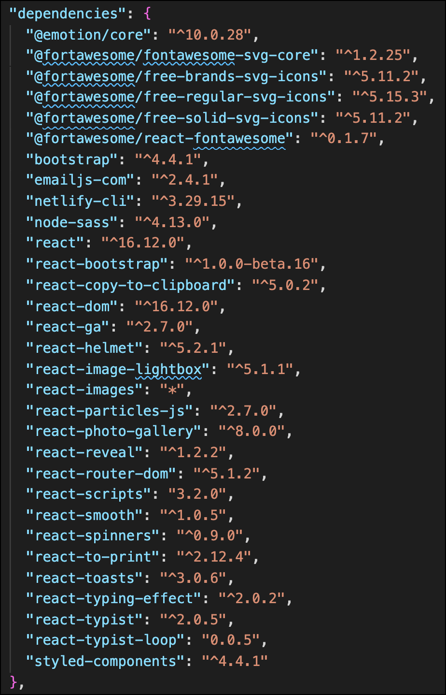

Most of the content in this section is from medium.com.
Single-page application vs. multiple-page application
Web applications are unwittingly replacing the old desktop applications. They are more convenient to use, they are easy to update, and they are not bound to one device. And even though users are gently moving from browser-based web applications into the mobile ones, the demand for complex and refined apps is already huge and is still growing. If you are thinking about creating your own application, you’ve probably heard that there are two main design patterns for web apps: multi-page application (MPA) and single-page application (SPA). And of course, both models have their pros and cons.
Before you start turning your idea into the real application, you have to answer a bunch of important questions. To decide what app model is better for you, you should follow content-first approach, which emphasizes the importance of putting your application content before everything else. That’s because content is the main reason for which users will or won’t use the application. And this leads us to the most important questions: what content do you want to present and what content your users will care about the most.
There are many pros and cons of SPA as well as of MPA. I hope that the lines below will clear the differences between these two design patterns and bring you closer to the point where you will know what kind of application fits your idea more. And make your idea about own application come true.
Single-Page Application
A single-page application is an app that works inside a browser and does not require page reloading during use. You are using this type of applications every day. These are, for instance: Gmail, Google Maps, Facebook or GitHub.
SPAs are all about serving an outstanding UX by trying to imitate a “natural” environment in the browser — no page reloads, no extra wait time. It is just one web page that you visit which then loads all other content using JavaScript — which they heavily depend on.
SPA requests the markup and data independently and renders pages straight in the browser. We can do this thanks to the advanced JavaScript frameworks like AngularJS, Ember.js, Meteor.js, Knockout.js.
Single-page sites help keep the user in one, comfortable web space where content is presented to the user in a simple, easy and workable fashion.
Pros of the Single-Page Application:
-
SPA is fast, as most resources (HTML+CSS+Scripts) are only loaded once throughout the lifespan of application. Only data is transmitted back and forth.
-
The development is simplified and streamlined. There is no need to write code to render pages on the server. It is much easier to get started because you can usually kick off development from a file file://URI, without using any server at all.
-
SPAs are easy to debug with Chrome, as you can monitor network operations, investigate page elements and data associated with it.
-
It’s easier to make a mobile application because the developer can reuse the same backend code for web application and native mobile application.
-
SPA can cache any local storage effectively. An application sends only one request, store all data, then it can use this data and works even offline.
Cons of the Single-Page Application:
-
It is very tricky and not an easy task to make SEO optimization of a Single-Page Application. Its content is loaded by AJAX (Asynchronous JavaScript and XML) — a method of exchanging data and updating in the application without refreshing the page.
-
It is slow to download because heavy client frameworks are required to be loaded to the client.
-
It requires JavaScript to be present and enabled. If any user disables JavaScript in his or her browser, it won’t be possible to present application and its actions in a correct way.
-
Compared to the “traditional” application, SPA is less secure. Due to Cross-Site Scripting (XSS), it enables attackers to inject client-side scripts into web application by other users.
-
Memory leak in JavaScript can even cause powerful system to slow down
-
In this model, back and forward buttons become dysfunctional.
Multi-Page Application
Multiple-page applications work in a “traditional” way. Every change eg. display the data or submit data back to server requests rendering a new page from the server in the browser. These applications are large, bigger than SPAs because they need to be. Due to the amount of content, these applications have many levels of UI. Luckily, it’s not a problem anymore. Thanks to AJAX, we don’t have to worry that big and complex applications have to transfer a lot of data between server and browser. That solution improves and it allows to refresh only particular parts of the application. On the other hand, it adds more complexity and it is more difficult to develop than a single-page application.
Pros of the Multiple-Page Application:
-
It’s the perfect approach for users who need a visual map of where to go in the application. Solid, few level menu navigation is an essential part of traditional Multi-Page Application.
-
Very good and easy for proper SEO management. It gives better chances to rank for different keywords since an application can be optimized for one keyword per page.
Cons of the multiple-page application:
-
There is no option to use the same backend with mobile applications.
-
Frontend and backend development are tightly coupled.
-
The development becomes quite complex. The developer needs to use frameworks for either client and server side. This results in the longer time of application development.
SPA or MPA?
Before deploying a web application, you need to consider the goal of it. If you know you need multiple categories (because, for instance, you run an online shop or publish a lot of other content) — use a multi-page site. If you are sure that your site is appropriate for a pure single-page experience — go for it. And if you like SPA but can just barely fit everything into a single page, consider the hybrid site instead. This is another way I haven’t mentioned before. A hybrid application takes what is the best in both approaches and try to minimize the disadvantages. It is, in fact, a single page application which uses URL anchors as synthetic pages enabling more in build browser navigation and preference functionality. But this is the topic for another article.
Perhaps in the future, everyone will use Single Page Application model (including a hybrid app), as it seems to bring a lot of advantages. Many apps on the market are migrating towards this model. However, as some projects simply cannot fit into SPA, the MPA model is still vivid.
Much of this section comes straight from the node.js website
What is a dependency?
A dependency is some third-party code that your application depends on. Just like a child depends on its parent, your application depends on other people's code. A piece of code becomes a true dependency when your own application cannot function without it.
What are packages?
The term "package" is used to describe code that's been made publicly available. A package can contain a single file or many files of code. Generally speaking, a package helps you to add some functionality to your application.
What is the file "package.json"
All npm packages contain a file, usually in the project root, called package.json - this file holds various metadata relevant to the project. This file is used to give information to npm that allows it to identify the project as well as handle the project's dependencies. It can also contain other metadata such as a project description, the version of the project in a particular distribution, license information, even configuration data - all of which can be vital to both npm and to the end users of the package. The package.json file is normally located at the root directory of a Node.js project.
Here is a minimal package.json:
{
"name" : "barebones",
"version" : "0.0.0",
}
The name field should explain itself: this is the name of your project. The version field is used by npm to make sure the right version of the package is being installed. Generally, it takes the form of major.minor.patch where major, minor, and patch are integers which increase after each new release. For more details, look at this spec: http://semver.org .
For a more complete package.json, we can check out underscore:
{
"name" : "underscore",
"description" : "JavaScript's functional programming helper library.",
"homepage" : "http://documentcloud.github.com/underscore/",
"keywords" : ["util", "functional", "server", "client", "browser"],
"author" : "Jeremy Ashkenas <[email protected]>",
"contributors" : [],
"dependencies" : [],
"repository" : {"type": "git", "url": "git://github.com/documentcloud/underscore.git"},
"main" : "underscore.js",
"version" : "1.1.6"
}
As you can see, there are fields for the description and keywords of your projects. This allows people who find your project understand what it is in just a few words. The author, contributors, homepage and repository fields can all be used to credit the people who contributed to the project, show how to contact the author/maintainer, and give links for additional references.
The file listed in the main field is the main entry point for the library; when someone runs require(<library name>), require resolves this call to require(<package.json:main>).
Finally, the dependencies field is used to list all the dependencies of your project that are available on npm. When someone installs your project through npm, all the dependencies listed will be installed as well. Additionally, if someone runs npm install in the root directory of your project, it will install all the dependencies to ./node_modules.
It is also possible to add a devDependencies field to your package.json - these are dependencies not required for normal operation, but required/recommended if you want to patch or modify the project. If you built your unit tests using a testing framework, for example, it would be appropriate to put the testing framework you used in your devDependencies field. To install a project's devDependencies, simply pass the --dev option when you use npm install.
For even more options, you can look through the online docs or run npm help json.
NPM
What is NPM?
From w3schools we learn:
npm is the world's largest Software Registry.
The registry contains over 800,000 code packages.
Open-source developers use npm to share software.
Many organizations also use npm to manage private development.
Having learned about JavaScript Dependencies in the previous section, you can see how npm could play a large role in our web applications. With almost 1,000,000 packages of code available, there are many things that can be done very quickly and very efficiently by making use of these packages. To give you an idea this website was made in just a couple of days. It uses many packages which is one of the reasons why it could be created so quickly. A few of the more noticeable packages to note are:
The particles as the background across all of the pages
The typewriter typing effect
The photo gallery on the personal page
The image viewer on the personal page
The email form functionality on the contact page
The animations on the about page
The print functionality on the about page
Much of the styles throughout the whole site
All of the icons throughout the whole site
And many more...take a look at the list of dependencies in the package.json file from this site: 
So, how do we use npm?
Well first, we need to download and install Node.js. After that, you'll be able to run npm commands in your terminal when working on projects. This allows you to very easily download, update, remove or utilize packages in your applications. This article has a lot of great information on getting started with npm. The following video may also be very helpful:
NPX
With a decent understanding of what NodeJS is and what we can do with npm, and JavaScript packages and dependencies, let's learn a little bit about npx.
The following is from educative.io
JavaScript is definitely one of the most interesting, popular, and busiest languages out there. So, whenever there’s a new buzzword flying around in programming, chances are it is JavaScript related. One such buzzword is NPX. At this point, I’d love to briefly explain what Node and NPM are so as not to get confused.
NPX is an NPM package runner that makes it really easy to install any sort of node executable that would have normally been installed using NPM.
Why use NPX?
There are a number of ways to install node packages, you can have them sitting locally (local to the project) or install globally (in the user environment).
Sometimes, instead of using either of the two install methods above, you may just want to use the package and go.
Sometimes, you might just want to experiment with a list of packages as you may not know exactly what you need.
In these cases, instead of installing locally or globally, you can go straight to running those packages with NPX.
How does it work?
NPX comes bundled with NPM starting with version 5.2+. So, if your version of NPM is 5.2 or higher, then you have NPX installed.
When you run a package using NPX, it searches for the package in the local and global registry, and then it runs the package.
If the package is not already installed, NPX downloads the package files and installs the package, but it will only cache the files instead of saving it.
To use NPX, you would run a command like this:
npx some-packageOne great way for you to see how quickly NPX works is to create a react app using:
$ npx create-react-app my-appThe above command will generate a react app, named my-app, in the path that the command was run in using the create-react-app package. NPX then searches for the package in your environment. If it is not found, NPX downloads the files and runs the command to create a new react app, using just that one line of command.
One disadvantage of NPX is that it needs to search for packages, whether or not they are installed, before it actually runs them. This, to me, can sometimes be an overhead when you need to get things done very quickly.
To explore further you can read here .
What does "Build" mean?
The word “build” can be used to describe what it does, which is constructing, or “building”, a project and preparing any tasks, such as updating or installing packages.
Running the command will run whatever value is assigned to the key "build" in the package.json file. So, if it was set to
"build": "babel src -d lib"then running
npm run buildwill run the command
"babel src -d lib".Why does it matter?
Much of this section comes from stackoverflow.
Gulp and Grunt (JavaScript build tools) allow for task automation.
Pretty much anything you find yourself doing repeatedly in a project, can be automated with gulp and it's plugins. and if you can't find a plugin to do the job for you, gulp is just a nodejs app, so you can quickly write your own code to do the job.
As far as examples, since I myself am an angular web developer, I will give you examples from the Front End Development land, but don't think gulp is only limited to this area. So here are some examples :
automate your build process ( some subtask examples here )
take all your projects html,js,css, concatenate them and minify them
automatically inject dependencies into your html files
listen to file changes and run tasks when a file changes
everytime you add a js file, you need to add include it to your html files. this can be automated
everytime you save a JavaScript file you want to run jshint on it, to warn for errors
everytime you save a CoffeeScript file, you want it to be automatically converted into a javascript file, and have that javascript file included to your html files
deleting files automatically
thousands of other things
Another interesting benefit you get with JavaScript build tools specifically ( as opposed to Java's Ant or Rails's Rake ), is that most of all web applications out there use JavaScript. So if your back end is in Java or Rails or C++ ... your front end people always rejoice under JavaScript. Which means that, no matter what language you use, you STILL use JavaScript ... Which makes tools like gulp very interesting, because JavaScript and JavaScript experience is guaranteed to exist in any Web Development team.
From another user...
Build tools are an asset to application development. Few years back, it was common for project managers to run behind the developers asking them to clean up the code, lint the code, increase the performance of the application etc.
The usual modus operandi of developers was to make a copy of the 'Development' environment code for the Production environment and do the required operations. Developers would use third party software or apps that helps in cleaning up the code like removing unnecessary comments, minifying to decrease the overall size of the file and thereby the application, concatenating the files so that you decrease the number of hits to the server, perform unit tests, to name a few.
What build systems like Gulp and Grunt have done is that it automates all the above mentioned tasks in a span of few seconds. These build systems have specific plugins that does concatentation, minification, linting, environment specific development etc. All these tasks run in one go performing the required operations, in turn running the application from the newly formed production code.
The advantage of using build system is that it accelerates your application's page load time to a greater extent. Your code is cleaner, smaller in size and at the same time adheres to the best coding practices. And in turn , you save a lot of time which was spent doing each of these tasks.
They are pretty easy to work with and should be used in application development. :-)
Summary
As you can see, there are a lot of things that can be done with JavaScript builds. Pretty much anytime you work with a frontend framework like React or Vue, there will be builds that will be executed to help you automate your tasks and do things very quickly and efficiently.
All of these concepts have been discussed previously. Please reference the following links for some review on these concepts before moving forward.
Variable Types
Repetition
Functions
JavaScript this
All of the links below are from w3schools. As you are probably well-aware, w3schools is an incredible resource for learning the principles of programming and various languages at a base level. Please use the following links to learn about these topics.